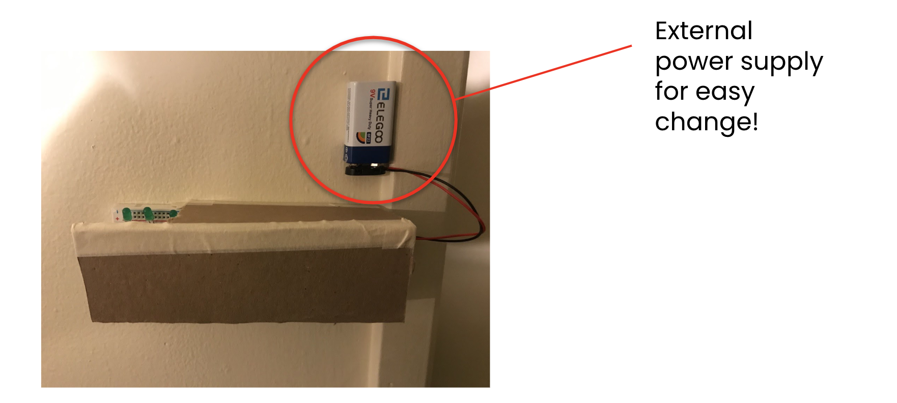

Final Project: Sound Sensing LEDs!

Concept: The LEDs light up upon detecting a sound!
Concept: The LEDs light up upon detecting a sound!
For my final project, I decided to build a sound detecting light source! It takes in sound as an input and produces light from the LEDs as an output! This project requires the following components:
I wanted to build a sound detecting light source because my apartment gets really dark at night. Looking for the light switch on the wall can be troublesome at times. Thus, I wanted to be able to switch the lights on without having to physically look for the switch!
The three green LEDs are connected to Pins 13,12 and 11. Since the voltage drop for a green LED is about 1.8V, using Ohms Law, the resistance calculated will come up to 160Ω. So, any resistor that’s above 160Ω can be used. In this case, I used the 220Ω resistor across each of the LEDs. The sound sensor has 3 channels, VCC, ground and the output. So, I connected it to the 5v pin, ground and Pin 7 on the arduino.
The actual circuit is shown below.
I used boolean logics to allow the LED to toggle between the different states. Implementing a simple if, else statement was sufficient to switch the LEDs on and off. So, the first time the device hears a sound, the status becomes true and the LED switches on. The second time it captures sound, the status goes back to false and switches the LED off. I used digitalWrite instead of analogWrite because I am not adjusting the brightness of the LEDs. I only need the two states (HIGH/LOW) for this project.
My final prototype looks like this where it is enclosed in a box and mounted on the wall in my apartment
I decided to have the power supply outside of the encasing because I thought that it would be much more convenient to change the battery when the source eventually runs out.
A video of the working final prototype is shown below!